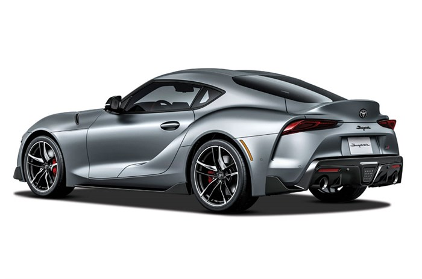
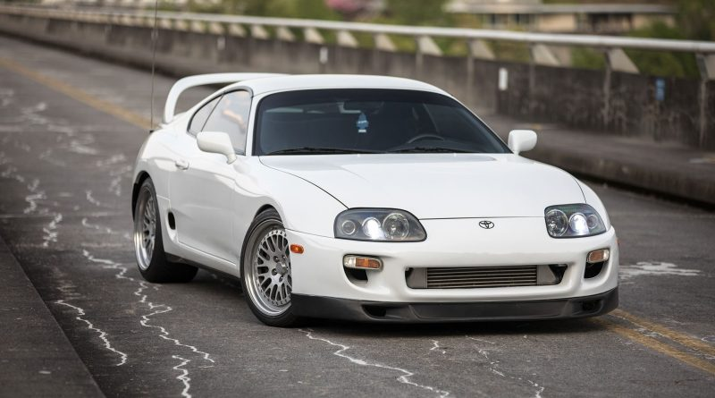
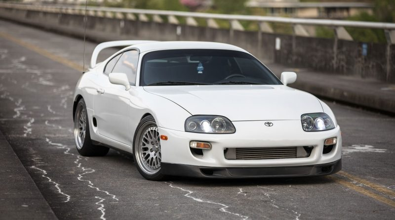

Supra
- Toyota Supra (Japanese: トヨタ・スープラ, Hepburn: Toyota Sūpura) is a sports car and grand tourer manufactured by the Toyota Motor Corporation beginning in 1978. The name "supra" is derived from the Latin prefix, meaning "above", "to surpass" or "go beyond".
- The initial four generations of the Supra were produced from 1978 to 2002. The fifth generation has been produced since March 2019 and went on sale in May 2019.[4] The styling of the original Supra was derived from the Toyota Celica, but it was both longer and wider.[5] Starting in mid-1986, the A70 Supra became a separate model from the Celica.
- In turn, Toyota also stopped using the prefix Celica and named the car Supra.[6] Owing to the similarity and past of the Celica's name, it is frequently mistaken for the Supra, and vice versa. The first, second and third generations of the Supra were assembled at the Tahara plant in Tahara, Aichi, while the fourth generation was assembled at the Motomachi plant in Toyota City.
- The 5th generation of the Supra is assembled alongside the G29 BMW Z4 in Graz, Austria by Magna Steyr.
- The Supra traces much of its roots back to the 2000GT owing to an inline-6 layout. The first three generations were offered with a direct descendant to the Crown's and 2000GT's M engine. Interior aspects were also similar, as was the chassis code "A". Along with this name, Toyota also included its own logo for the Supra. It was derived from the original Celica logo, being blue instead of orange.
- This logo was used until January 1986, when the A70 Supra was introduced. The new logo was similar in size, with orange writing on a red background, but without the dragon design. That logo, in turn, was on Supras until 1991 when Toyota switched to its current oval company logo. The dragon logo was a Celica logo regardless of what colour it was.
- It appeared on the first two generations of the Supra because they were officially Toyota Celicas. The dragon logo was used for the Celica line until it was also discontinued.

 
